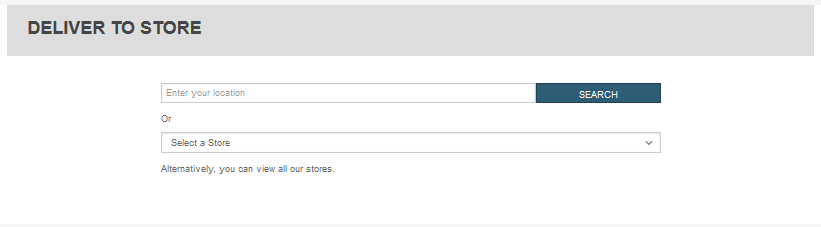
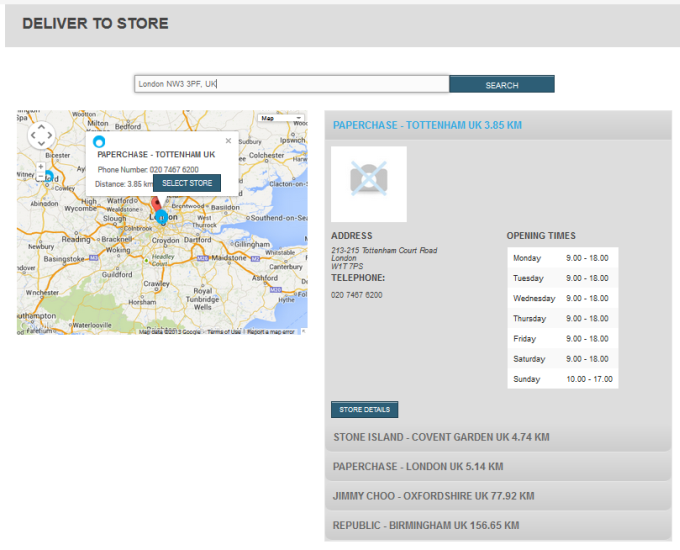
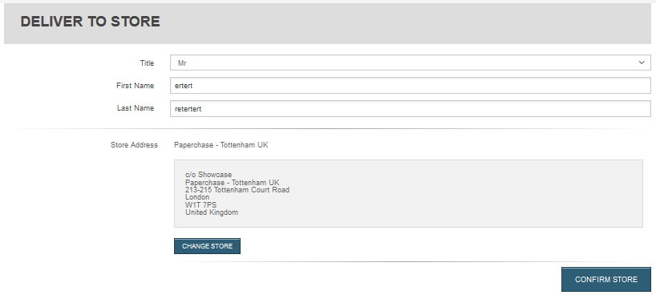
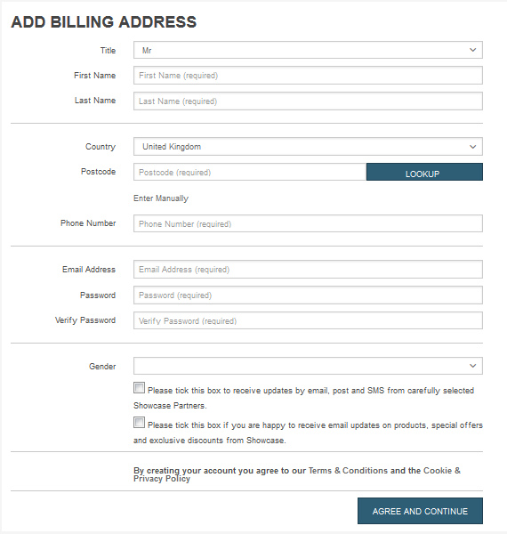
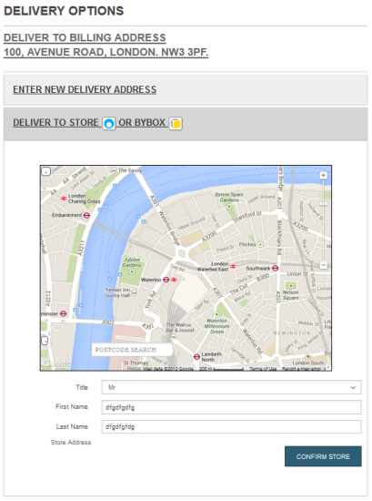
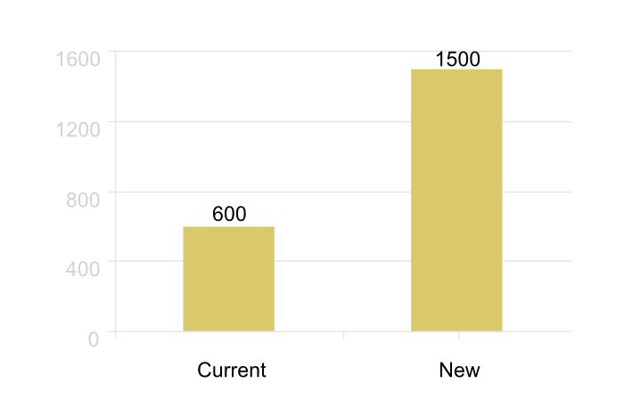
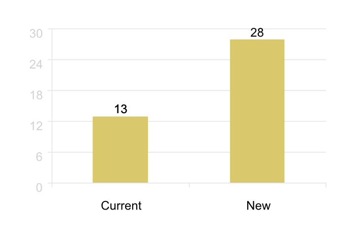
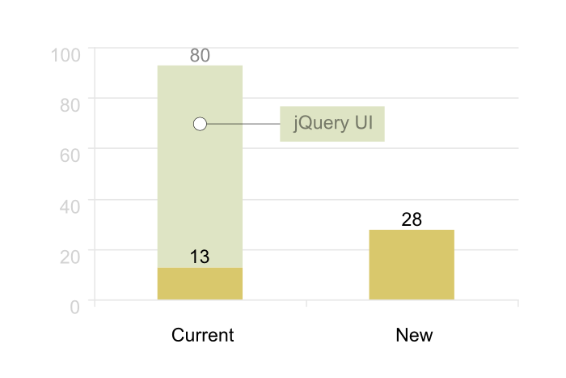
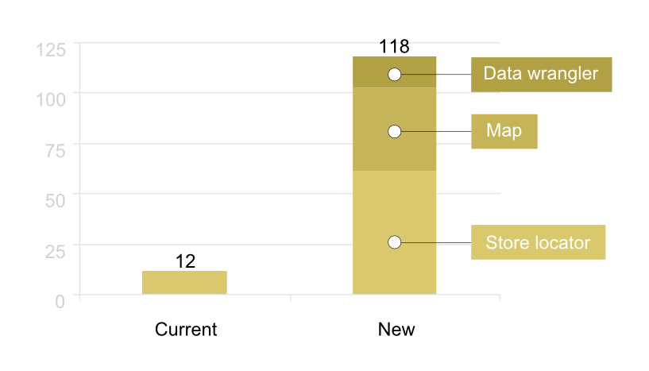

Andy Willis
Peter Shangov
Current Store Locator
- A limit to the number of stores
- Tesco workaround - Google Fusion tables
- Reliance on jQuery UI
- Not responsive
- Multi-screen DTS workflow
Step 1
Step 2
Step 3
Step 4
Requirements
- Capitalise on self-service technologies
- Future-proof
- UI/UX improvements
- Responsive
- Fits with Showcase theme
- Slimline checkout workflow
New Store Locator
- Standardised data format
- No limit to number of available stores
- However: limit to number of retrieved stores
- No reliance on jQuery UI
- Responsive design - mobile first
- Reduced number of workflow steps
- JS templating / scaffolding
Step 1
Step 2
One template line!
Current phase
<div class="storelocator" data-type="normal|checkout"></div>
Next phase
<div class="storelocator" data-type="normal|checkout" data-store="default,bybox,collectplus"></div>
Screenshots
On load

Find me / Postcode search

List view

Information window

Show route

Store information

Technical Details And Comparison
Lines Of Code
Minified Size (k)
Minified Size (k) - Redux
Number of functions
Function Chaining
pseudoInit: function () {
this
.getListOfStores()
.getStorelocatorType()
.addHTMLStructure()
.cacheStoreLocatorImages()
.positionList()
.clearLocalStorage()
.getDevice()
.positionOverlay()
.addSearchBar()
.positionErrorBar()
.hideStoreInfo();
return this;
}
Limitations
- Incomplete data.
- Inflexible APIs.
- Numerous API calls.
- Lots of images, particularly for markers
- Currently limited to just general stores & Bybox
Next steps
- Incorporate new design
- Code for new services
- Refactor image files
- Workflow styling
Sandbox
https://github.com/venda/VendaSandbox